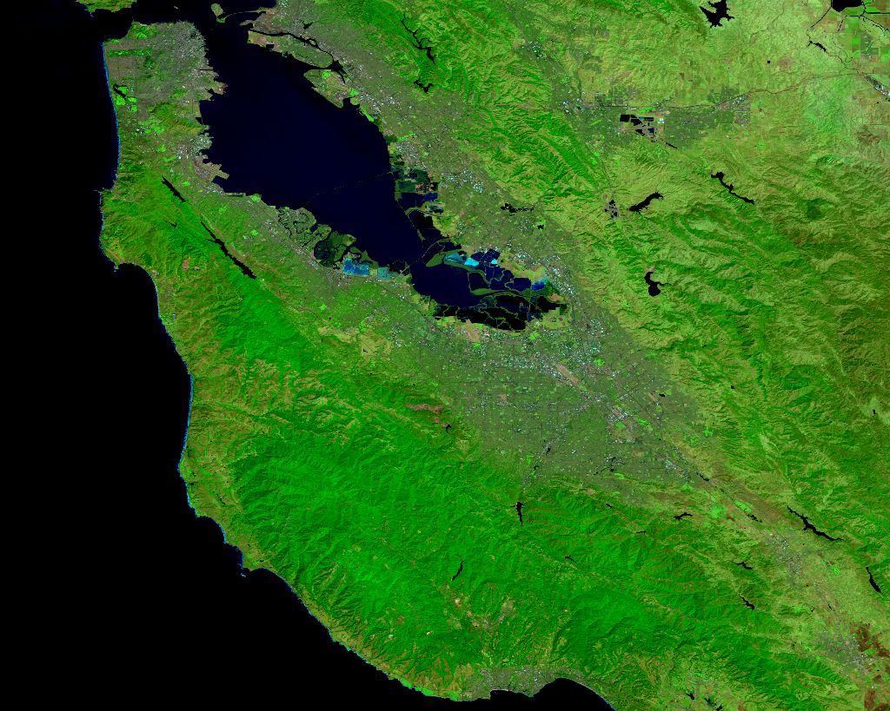

Landsat 8 Cloud Masking
This example highlights how the EE Julia API can be used to create a function and apply over imagery. Example from the Javascript Landsat8 Surface Reflectance example.
Code
using EarthEngine
Initialize()
# Function to cloud mask from the pixel_qa band of Landsat 8 SR data.
function maskL8sr(image)
image = EE.Image(image) # cast to make sure we have the correct type
# Bits 3 and 5 are cloud shadow and cloud, respectively.
cloudShadowBitMask = 1 << 3
cloudsBitMask = 1 << 5
# Get the pixel QA band.
qa = select(image, "pixel_qa")
# Both flags should be set to zero, indicating clear conditions.
mask = And(
eq(bitwiseAnd(qa, cloudShadowBitMask), 0),
eq(bitwiseAnd(qa, cloudsBitMask), 0)
)
# Return the masked image, scaled to reflectance, without the QA bands.
return copyProperties(
select(
divide(
updateMask(
image,
mask
),
10_000
),
"B[0-9]*"
),
image, ["system:time_start"]
)
end
# get the landsat collection and filter by date
collection = filterDate(
EE.ImageCollection("LANDSAT/LC08/C01/T1_SR"),
"2016-01-01", "2016-12-31"
)
# apply the quality masking function
masked = map(collection, maskL8sr)
# calculate median pixel
composite = median(masked)
# define a region to view results
mntview = Point(-122.0839, 37.3861)
region = bounds(buffer(mntview, 5e4))
# get a link to view results
getThumbURL(composite, Dict(
:bands => "B7,B5,B3",
:min => 0.05,
:max => 0.55,
:gamma => 1.5,
:region => region,
:dimensions => 1024
))Expected result
